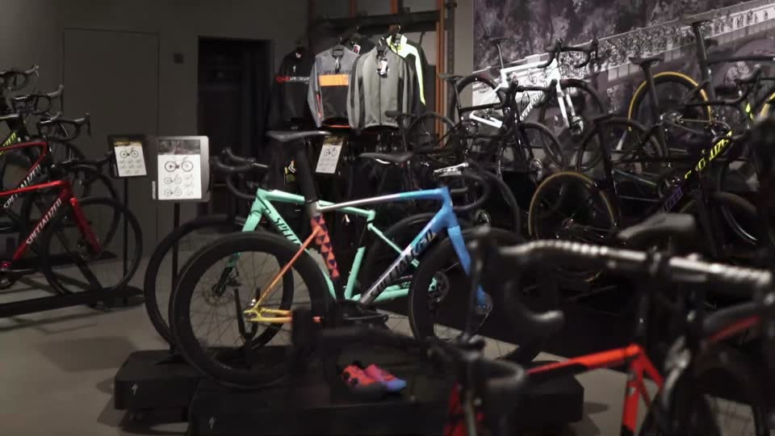

Achim
Zweiradmechaniker-Meister · Retül-zertifiziert
Seine Begeisterung für Bikes zeigt sich in der Werkstatt, in individuellen Builds, beim Bikefitting und vor der Kamera.
Die Menschen hinter Racepoint
Persönlich vom ersten Gespräch bis zur letzten Schraube. Lerne die Menschen kennen, die hinter deinem Bike stehen.


Achim Leufgen · Zweiradmechaniker-Meister
„Ich bin der Achim aus den Videos. Bevor ein Bike unseren Laden verlässt, war es in meinen Händen – egal ob Kinderrad, E-Bike oder S-Works.“
Handwerk · Leidenschaft · Schönberg
Bei Racepoint treffen Achims Begeisterung für besondere Builds und ehrliches Handwerk aufeinander. Mit Elke und dem Team macht er aus „Ich suche ein Bike“ ein „Das ist meins“.
Zweiradmechaniker-Meister · Retül-zertifiziert
Seine Begeisterung für Bikes zeigt sich in der Werkstatt, in individuellen Builds, beim Bikefitting und vor der Kamera.
Racepoint · Schönberg
Zusammen mit Achim und dem Team steht Elke für persönliche Beratung in Schönberg – vom ersten Gespräch an.
Werkstatt & Beratung
Von Menschen, die genauso gern fahren wie du: Beratung, Werkstatt für alle Marken und Betreuung deines Bikes.
Geschichte
Was in Schönberg im Dreiländereck angefangen hat, schauen heute 80.000 Menschen auf YouTube. Geblieben ist das Wichtigste: persönliche Beratung und ehrliches Handwerk.
Der Anfang
Seit 18 Jahren in Ostbelgien – mitten im Dreiländereck, eine Stunde von Aachen, Lüttich und Luxemburg.
Handwerk
Inspektion, Reparatur, Fahrwerk und E-Bike-Service – nicht nur für Specialized, sondern für alles, was zwei Räder hat.
Partner
Als Specialized Elite Händler begleiten wir dich von der Auswahl bis zur Betreuung deines Bikes.
Präzision
Achim ist Retül-zertifiziert: 3D-Motion-Capture, damit dein Bike wirklich zu dir passt.
Vor der Kamera
Builds, Unboxings und Werkstatt-Wissen auf @racepointbikeshop – unsere Builds machen sichtbar, wie viel Handwerk in einem Bike steckt.
Auch vor der Kamera
Sag Hallo
Komm mit einer Frage, einer Idee oder deinem Bike. Oder frag vorab den KI-Berater.
Termine werden nur als Anfrage vorbereitet – gebucht wird erst durch das Racepoint-Team.